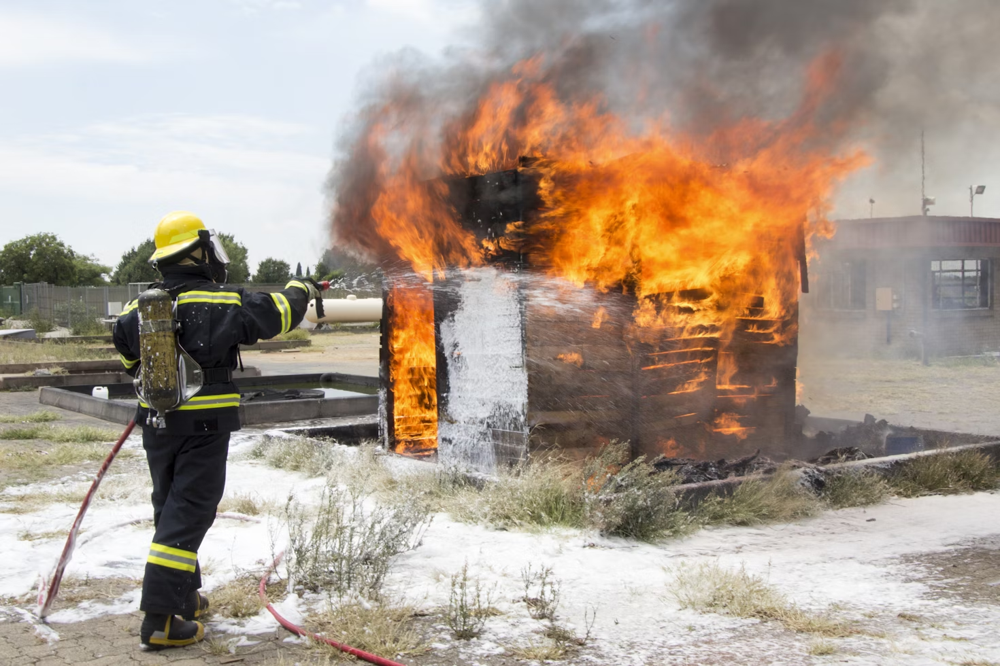

Áreas de atuação
Apesar de terem sido inicialmente constituídos com a função de combate a incêndios,
as funções dos bombeiros alargaram-se para quase todas as áreas da proteção civil.
Intervenção em incidentes com matérias perigosas,Intervenção em incidentes com redes de gás,
Corte de árvores em risco iminente de queda, Captura de animais correndo ou oferecendo risco.
